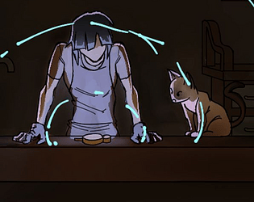
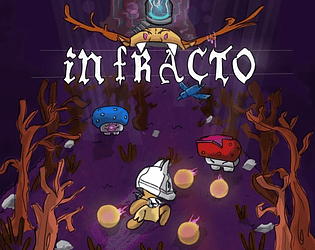
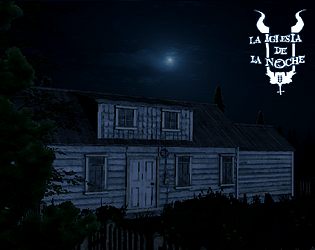
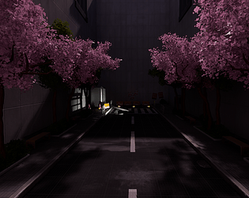
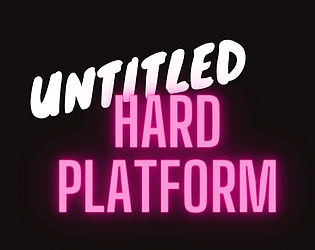
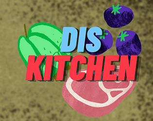
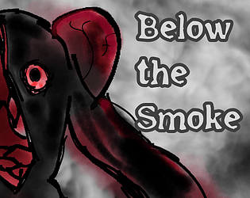

Games & Prototypes

PrototypeQuantum Solve
Exploration and restoration while time is ticking.

PrototypeinFracto
Dark Fantasy Skill-based Bullet Hell.

PrototypeLa Iglesia de la Noche
Mock-up of a more obscure type game based on a real story.

DemoPress-Pective
Superliminal-like demo in UE5.

DemoUntitled Hard Platform
Do u think you can beat all levels? In less than an hour? Ha!

PrototypeDis Kitchen
It's just a cooking game, but if you don't serve your customers, there will be bullet hell.

PrototypeBelow the Smoke
Very short prototype to test the main menu load and environment shading in an eerie setting.
Whisker Wars
Cats + TD + Minigames... Cool.
Afterlife
NO HOPE.
Fantasy Murder
Top-Down Hotline Miami-Fantasy Styled prototype.